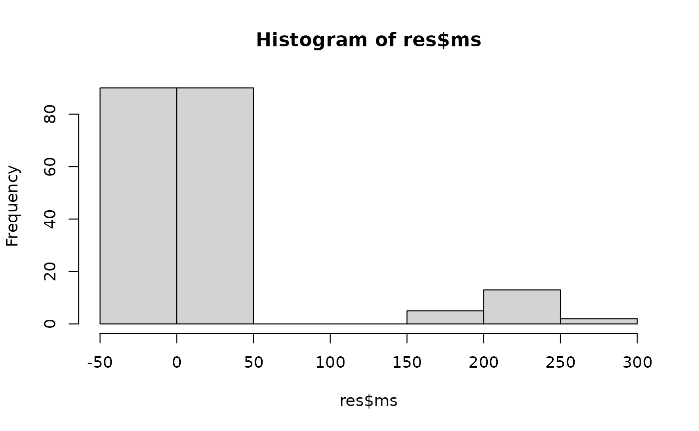

In many real-world applications—from genomics to social science—we encounter count data with inherent correlations. Traditional Poisson models often assume independence, but real data frequently exhibits feature dependencies. Here, we explore identifying distinguishing features when counts follow correlated Poisson distributions via Gaussian copula.
Setting Up the Simulation
Consider two distinct groups with:
- 50 observations per group (100 total)
- 200 features following Poisson distributions
- Only 20 features (10%) showing genuine differences
- Correlation structure among features (modeled by Gaussian copula)
The simulation parameters:
-
delta: Magnitude of difference between groups -
rho: Correlation parameter controlling feature dependencies
data = gen_data_pois(n = 100, p = 200, prop = 0.1, delta = 5, rho = 0.1)
X = data$X
L = data$LGround Truth: Features 1–20 differ between groups (delta = 5), while features 21–200 are identical. All features share mild correlation (rho = 0.1).
Performance Evaluation
We can quantify how well DS performed against our known truth:
calc_acc(res$sel_set, 1:20)
#> fdr power f1
#> 0.1304348 1.0000000 0.9302326This gives us:
- Precision (1 - FDR): Proportion of selected features that are truly different
- Recall (Power): Proportion of true features that were correctly identified
- F1 score: Harmonic mean of precision and recall
Visualizing Mirror Statistics
Understanding the selection process can be insightful:
hist(res$ms)
Enhancing Robustness with MDS
When dealing with correlated data, results can vary with different data splits. The Multiple DS (MDS) approach aggregates results across multiple random partitions for more stable feature selection:
Check the accuracy of the selected set
calc_acc(res, 1:20)
#> fdr power f1
#> 0 1 1